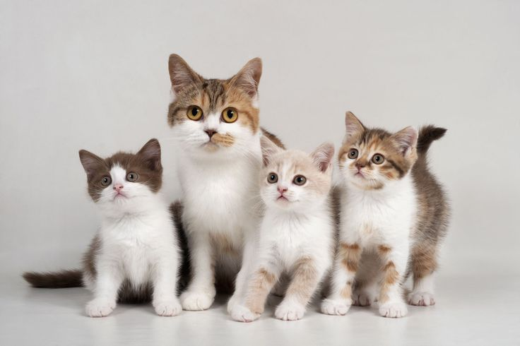
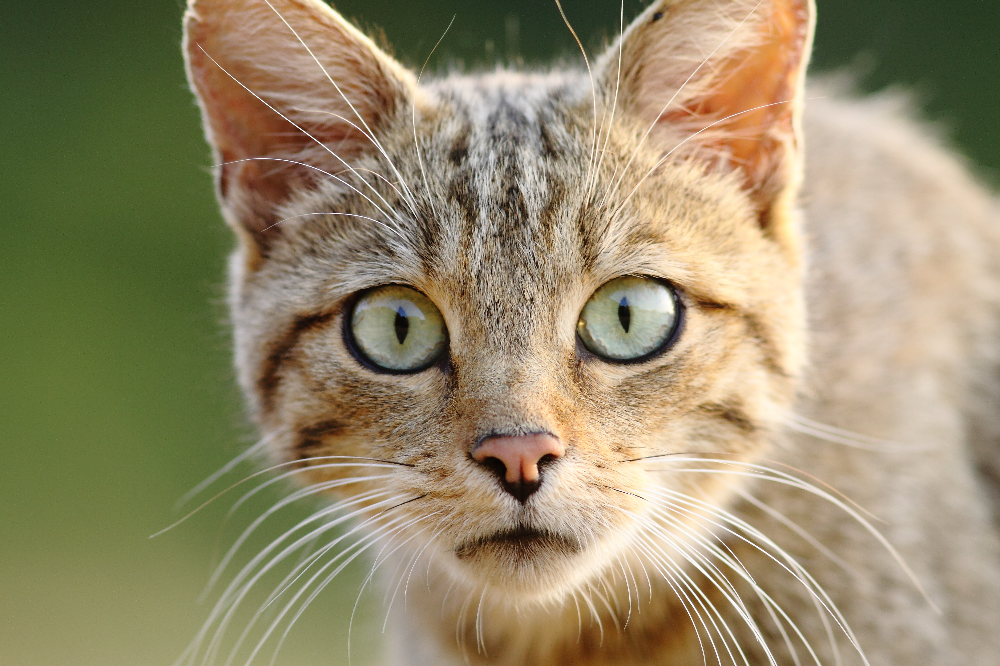
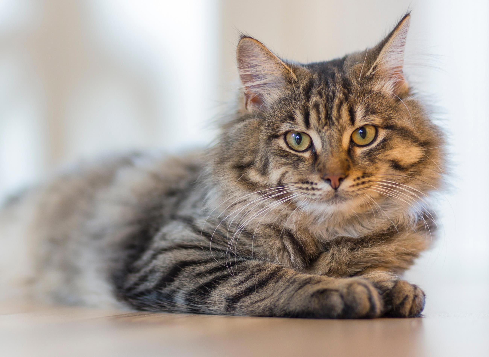
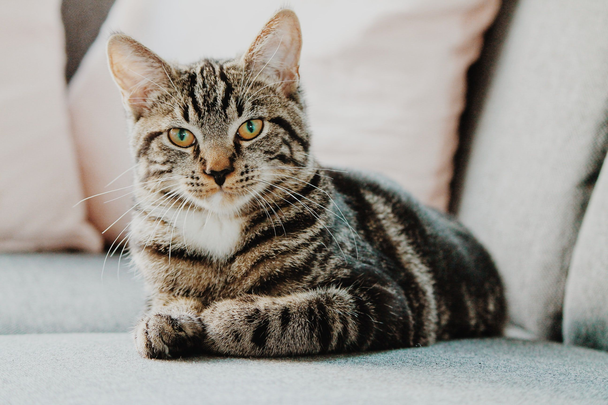
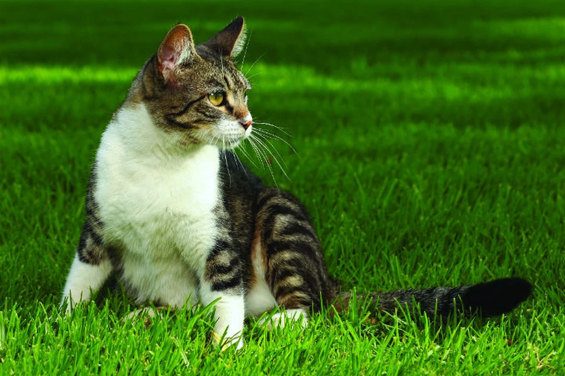

- Рисунок на носу каждой кошки неповторим, как отпечатки пальцев у человека.
- Обычно кошки – правши, тогда как коты – левши.
- Кошки не общаются между собой с помощью мяуканья. При этом они издают более ста звуков.
- Если кошка находится возле вас и ее хвост дрожит – это наивысшая степень любви, которую она может выразить.
- Всего существует 33 основных кошачьих породы. А количество домашних кошек в мире достигает 500 миллионов.
- Кошки имеют паранормальные способности, предчувствуя беду до того, как она случится – они предчувствуют землетрясения, пожары, наводнения и другие стихийные бедствия.
- Температура тела у кошек почти такая же, как у человека – 38 градусов.
- Мозг кошек ближе к человеческому, чем у других животных. За эмоции кошек отвечают те же участки мозга, что и у человека.
- Кошек одомашнивали 120 тысяч лет
- Люди начали жить с кошками 10 тысяч лет назад. Именно тогда люди начали жить с кошками, потому что они убивали грызунов
- Средневековье — худшее время в кошачьей истории. Совсем по-другому относились к этим животным в Средневековой Европе. Тогда кошек считали порождением дьявола и пособниками «темных» сил. Особенно «не везло» кошкам черного окраса — считалось, что именно таких заводили ведьмы для помощи в магических обрядах. За это несчастных питомцев нередко сжигали на кострах вместе с их хозяйками.
- Кошки чрезвычайно плодовиты. Ученые подсчитали, что потомство одной пары кошек за семь лет может произвести на свет больше 400 тысяч новых особей.
- Котята рождаются не только слепыми, но и глухими Наверняка многим известно выражение «как слепые котята». Но слух у только родившихся малышей тоже отсутствует и развивается вместе со зрением в течение двух первых недель жизни.
- Кошки чувствуют запахи не только носом. Они могут улавливать их специальным органом Якобсона, находящимся за резцами на верхнем небе. С его помощью питомцы анализируют незнакомые и заинтересовавшие их запахи. Причем, делают это они довольно забавным образом — замерев и приоткрыв рот
Интересные факты о кошках
    